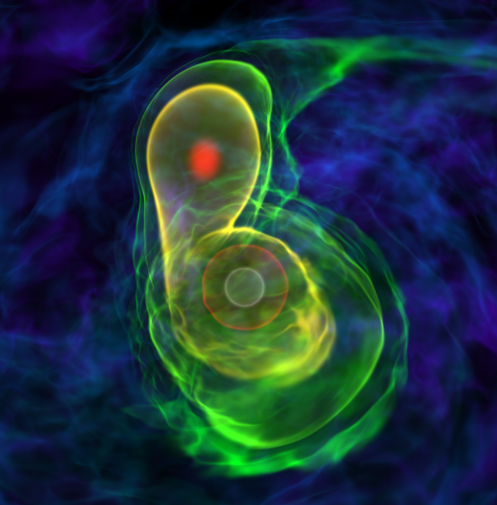

Current Research
-

White Dwarf Mergers
We are modeling the inspiral of binary white dwarfs with the compressible Castro code to explore the double degenerate mechanism for Type Ia supernovae. -

-

X-ray bursts
We are exploring both the convection that precedes the runaway and the flame spreading across the neutron star in X-ray bursts.
Previous Research Topics
-

White Dwarf Convection
For centuries preceding the explosion of a Type Ia supernova, reactions at the center of the white dwarf slowly heat the star, driving convection. Hot plumes buoyantly rise and cool via expansion. As the star continues to heat up, eventually the reactions proceed fast enough that a plume cannot cool via expansion, and ignition takes place. Understanding where the initial flames form is critical to understanding the subsequent explosion. We model the final stages of convection in a white dwarf, preceding the ignition and explosion of a Type Ia supernovae. -

Reacting Buoyant Bubbles
When the first flames ignite in a Type Ia supernova, they buoyantly float upward as they burn outward. We have performed fully resolved studies of burning rising bubbles in both two and three dimensions in conditions appropriate to Type Ia supernovae to better understand these dynamics.
-

sub-Chandra SN Ia
We are exploring the convective burning leading up to the ignition of a burning front in a helium layer on the surface of a white dwarf. -

Reactive Rayleigh-Taylor
The Rayleigh-Taylor instability plays a critical role in accelerating the burning front in Type Ia supernovae. We performed the first three-dimensional, direct numerical simulations of carbon flames in Type Ia supernovae undergoing the Rayleigh-Taylor instability and the transition to turbulence. -

Helium Detonations on Neutron Stars
Two-dimensional calculations of the dynamics of the explosion from my thesis. We follow the detonation wave as it propagates 2 km across the surface of the neutron star.